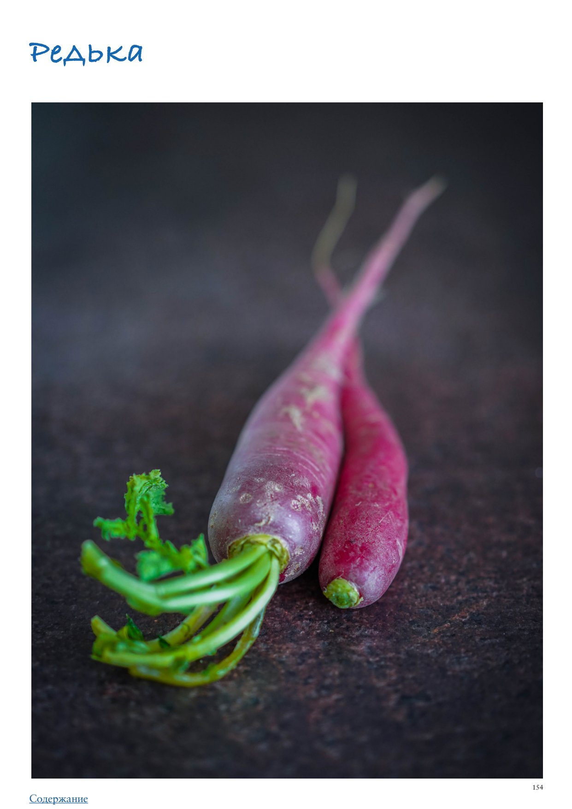

Редька
Редька — это тот овощ, который либо любят, либо ненавидят. Если вы относитесь к тем, кто ее любит, то, возможно, узнаете новое применение привычному овощу, а если все же ко второй категории, наднемся, впечатлитесь нашими советами и рецептами и решите дать ей еще один шанс. Или хотя бы сможете выбрать для себя вид с самым мягким вкусом. Раньше всем был знаком только один сорт редьки — черная (во всем мире более известная как «испанская»), именно ее сравнивали с хреном в известной поговорке, выясняя, что из них слаще. Ее редко используют в сыром виде, очень уж она плотная и ядреная! Если уж и делать из черной редьки салат, то нужно натереть ее на терке, заранее посолить — это смягчит вкус и текстуру — полить ароматным подсолнечным маслом и подавать с черным хлебом. Сейчас редька представлена в огромном разнообразии форм и расцветок: белая лоба (или правильнее «лобо», от китайского luobo), зеленая маргеланская, арбузная (зеленая снаружи и ярко-розовая внутри), фиолетовая. Новые сорта менее острые, более сочные и отлично подходят как для употребления в сыром виде, так и для термической обработки. Маргеланская редька — зеленая, круглой или вытянутой формы, сочная и почти не имеющая остроты. Культивируется повсеместно, хорошо переносит длительное хранение при правильных условиях. Ее ближайшие родственники — белая лоба и «арбузная». Они украсят свежие салаты, подходят для маринования и ферментации. Дайкон — японская разновидность редьки белого цвета и вытянутой формы. Некоторые экземпляры достигают полуметра в длину! Самая сочная и сладкая из всех собратьев, что делает ее промежуточным звеном между зимними сортами редьки и редиской. Используется как в сыром виде, так и в приготовленном. В Корее из дайкона делают кимчи, во Вьетнаме маринуют с морковкой для начинки знаменитого сэндвича Бань Ми, в Таиланде засыпают смесью соли и сахара, а затем вялят на солнце, чтобы в дальнейшем использовать в супах и блюдах из жареной лапши. Сегодня существуют сорта дайкона розового и фиолетового цвета, круглой и цилиндрической формы. Их, конечно, лучше всего использовать в свежем виде, чтобы не потерять цвет. Как выбирать Редька доступна круглый год и в правильных условиях хранится до урожая следующего года. Выбирайте некрупные плотные, ровные корнеплоды с гладкой кожицей без повреждений. Редька должна казаться тяжелой для своего размера, иначе окажется пустой и дряблой внутри. Как хранить Редька хранится в холодильнике не менее месяца, в ящике для овощей. Дайкон, будучи самым сочным, быстрее дрябнет и теряет влагу, поэтому его не стоит хранить дольше 2 недель. Лайфхаки Любая редька, являясь представителем семейства крестоцветных, приобретает горечь, если ее нарезать и ничем не приправить. Чтобы этого избежать, после нарезания редьку стоит сразу посолить, благодаря этому, к тому же, и вкус станет мягче, и мы избавимся от лишней жидкости, которая могла бы сделать тот же салат слишком водянистым. Как готовить